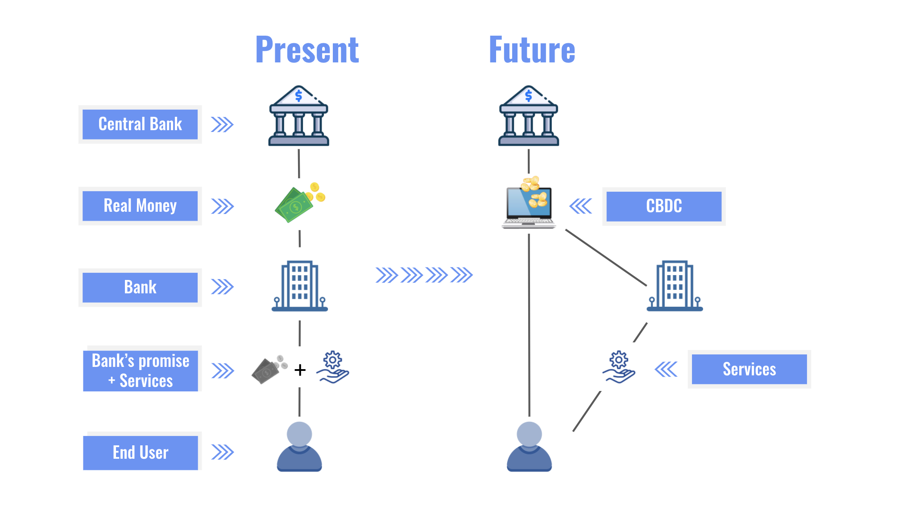

A CBDC is a Central Bank Digital Currency
Central Bank Digital Currencies are digital tokens, being developed as another form of legal tender by many countries, the currency's value is binded to the value of country's fiat currency.
The implementation of CBDC are due to a desire to shift into digital currency. As it is very inefficent and tedious to store and transact physical currency.
Currently, the money that is held in your bank account is not legal tender, the money is actually a promise that says the bank will give you a dollar upon request. In any case that your bank goes bankrupt, you cannot hold anyone to claim for the promise that the bank gave you, leaving you at a loss of money. This cannot happen with CBDCs, as it is regulated directly by the central bank. In turn with this, this also means that the central bank can directly implement its monetary policy to promote stablility, growth, and influence inflation.
Sources: